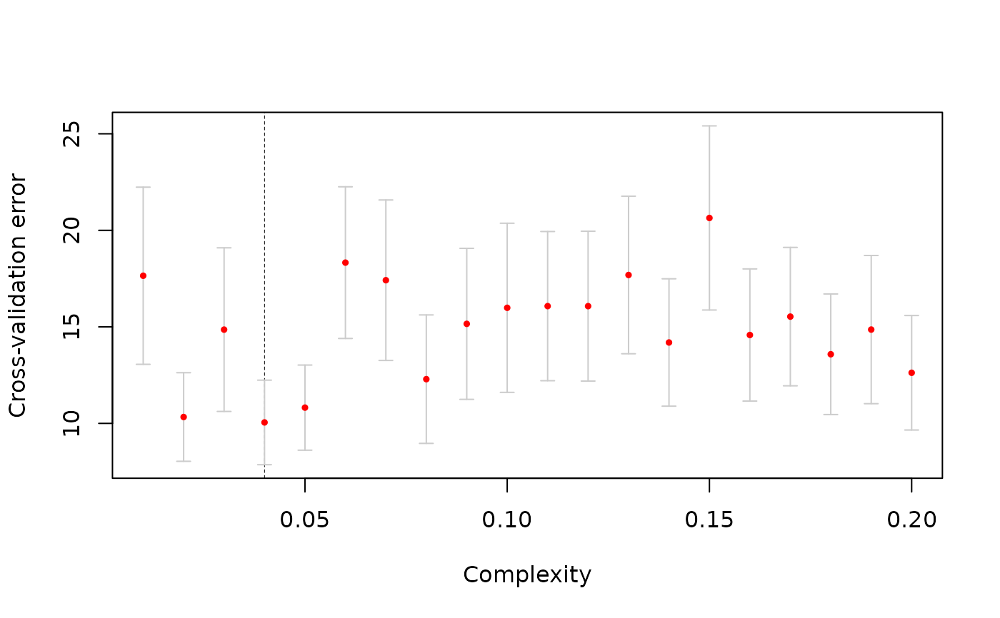

Cross-validation for regression trees
cv_tree.RdCross-validation for regression trees
Arguments
- formula
Model formula, as in
ctree()- data
Data frame containing the variables in the model, as in
ctree()- ...
Additional arguments to
ctree()- nfolds
Number of cross-validation folds. Default: 10.
- seed
Seed for reproducibility
- p
Complexity parameter; see
mincriterioninctree_control()- x
Result of a call to
- rev
Reverse horizontal axis (i.e., plot from high-to-low complexity)? Defualt: FALSE.
Examples
cv <- cv_tree(mpg ~ ., mtcars)
plot(cv)
